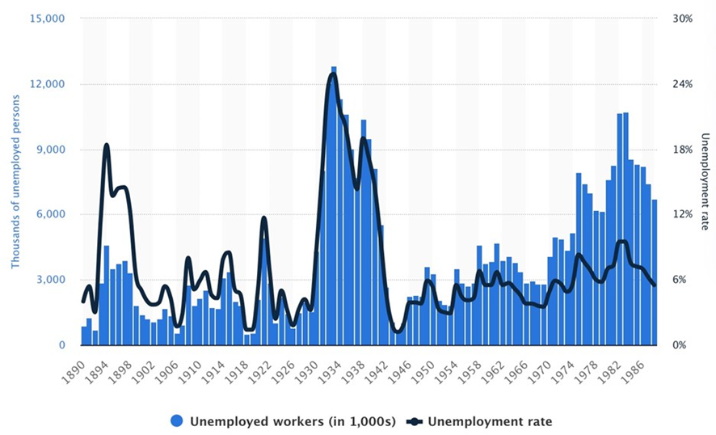
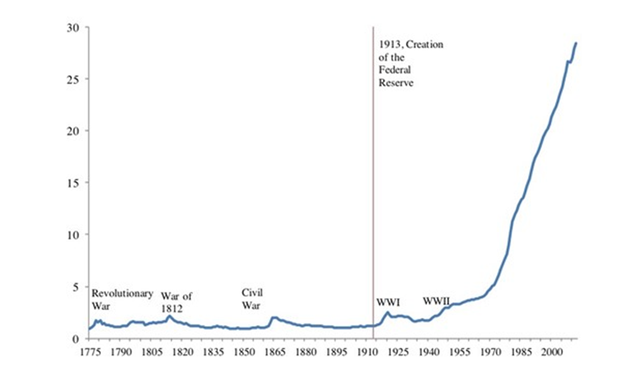
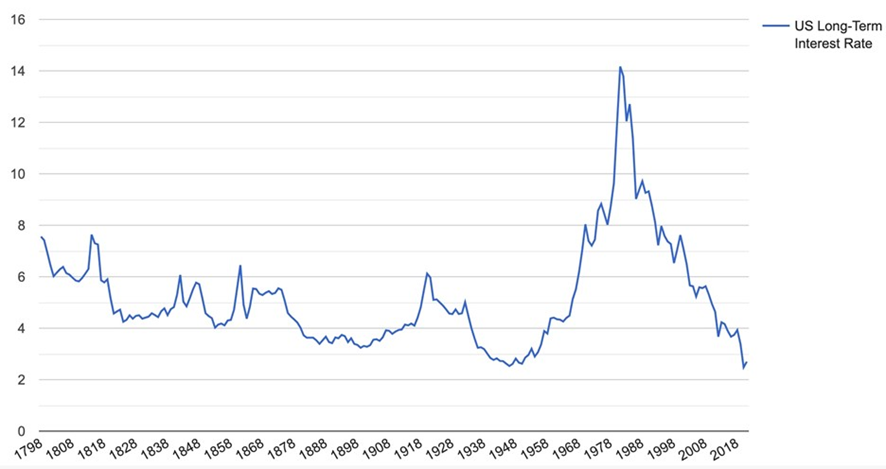
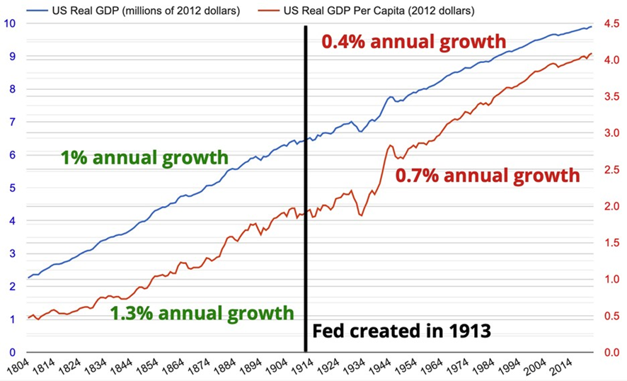
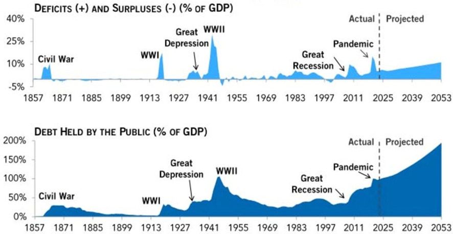

Economia
Federal Reserve: prejudicando a economia americana há mais de um século
Estaríamos em situação muito melhor se o Fed não existisse
 12/09/2023
12/09/2023
Desde a sua fundação em 1913, os burocratas planejadores centrais não eleitos do Federal Reserve (Fed - banco central dos Estados Unidos) têm o incrível privilégio de legalmente criar dinheiro a partir do nada, o que meros mortais como nós não estão autorizados a fazer. Foi-lhes dado também a tremenda responsabilidade de manter (i) o pleno emprego, (ii) um nível de preços estável e (iii) as taxas de juros baixas.
Como eles se saíram até agora?
Desde 1913, os burocratas do Fed ajudaram a causar:
- Mais de 20% de inflação de preços ao imprimir dinheiro para a Primeira Guerra Mundial;
- A depressão no início da década de 1920, com uma deflação de preços superior a 15%;
- A Grande Depressão da década de 1930, com 25% de desemprego e um colapso de mais de 10% no produto interno bruto (PIB) dos Estados Unidos;
- A “estagflação” dos anos 1970, com inflação e juros de dois dígitos;
- A bolha imobiliária da primeira década do século XXI;
- A Grande Recessão de 2008-09;
- Um aumento de 40% na oferta monetária em resposta ao Covid;
- Aumentos agressivos das taxas de juros ao longo do ano passado, o que provavelmente causará a vigésima primeira recessão desde a fundação do Fed.
É claro que houve ciclos econômicos de expansão e queda antes da criação do Fed, devido às leis governamentais que permitiam aos bancos com reservas fracionárias criarem dinheiro a partir do nada, bem como em função das várias intervenções governamentais nos setores monetário e bancário.
No entanto, dizem-nos que o Fed foi criado para ajudar a suavizar o ciclo econômico e a criar uma economia mais estável e próspera.
Abaixo, analiso alguns dados econômicos importantes antes e depois da criação do Fed para ver cinco formas importantes pelas quais o Fed tornou a economia pior do que seria sem ele.
O desemprego tornou-se muito maior
Infelizmente, os dados sobre o desemprego não estão disponíveis durante a maior parte do século XIX, mas os dados disponíveis mostram que o desemprego era geralmente muito baixo, uma vez que todos os que quisessem trabalhar poderiam arranjar um emprego se estivessem dispostos a aceitar salários de mercado.
Normalmente, não havia restrições legais que proibissem transações de trabalho voluntário. Assim, permitiu-se que os salários flutuassem de acordo com a oferta e a procura, tal como qualquer outro preço no livre mercado, o que geralmente conduzia ao pleno emprego.
O gráfico abaixo mostra as taxas de desemprego dos EUA de 1890 a 1988. A principal conclusão é que, antes da criação do Fed, o desemprego nunca atingiu os níveis incrivelmente altos observados durante a Grande Depressão da década de 1930, que ocorreu mais de 17 anos após a criação do Fed com o objetivo de “suavizar” o ciclo de negócios. Não esqueçamos também que o desemprego aumentou para 10% ou mais durante a Grande Recessão de 2008-2009 e o pânico da Covid de 2020.

Fonte: “Annual Number of Unemployed Workers and the Rate of Unemployment in the United States from 1890 to 1988,” Statista, accessado em 8 de agosto de 2023.
A inflação se tornou muito maior
A inflação é onde o histórico de fracasso do Fed é mais óbvio.
O gráfico abaixo mostra o Índice de Preços ao Consumidor dos EUA de 1775 a 2012. Fora os breves picos inflacionários impulsionados pela impressão de dinheiro para financiar guerras, a inflação era praticamente inexistente antes da criação do Fed, em 1913. Desde então, a inflação disparou, particularmente depois que todos os laços entre o dólar americano e o ouro foram cortados, em 1971. Como resultado dessa inflação de preços devido à criação de dinheiro pelo Fed, o dólar perdeu 97% do seu valor desde 1913.

Fonte: American Economic Association, reimpresso em Sam Ro, “CHART: Inflation since 1775 and How It Took Off In 1933”, Statista, accessado em 8 de agosto de 2023.
As taxas de juros se tornaram muito mais altas
O gráfico abaixo mostra as taxas de juros de longo prazo dos EUA entre 1790 e 2011. Embora as taxas de juros sempre tenham sido voláteis antes do Fed, nunca atingiram os níveis recordes que atingiram no início da década de 1980. Essas taxas de juros elevadas foram a reação do mercado à inflação de dois dígitos da década de 1970, causada pela criação agressiva de moeda por parte do Fed.

Fonte: dados da taxa de juros americana de longo prazo, 1798 até o presente, base de dados, MeasuringWorth, acessado em 21 de agosto de 2023.
O crescimento econômico tem sido mais lento
Embora seja difícil comparar a economia em séculos diferentes, o fato é que o crescimento econômico foi maior antes da criação do Fed. O gráfico abaixo mostra o crescimento real do PIB entre 1800 e 2020. O crescimento foi maior de 1800 até a criação do Fed, como mostra a inclinação mais acentuada do crescimento real do PIB antes de 1913 em comparação com depois de 1913.

Fonte: dados do PIB real dos Estados Unidos, 1790 até o presente, e do PIB real per capita dos Estados Unidos, 1790 até o presente, base de dados, MeasuringWorth, acessado em 21 de agosto de 2023.
Durante este período de liberdade econômica sem precedentes (exceto para os óbvios males da escravatura) e de tributação mínima, os EUA deixaram de ser um país atrasado economicamente para se tornarem talvez o país mais rico da história do mundo.
Embora outras intervenções econômicas governamentais e impostos tenham contribuído para um crescimento mais lento desde 1913, o Fed partilha grande parte da culpa. O Fed contribui para um crescimento econômico mais lento ao ajudar a provocar o ciclo econômico de boom e bust, que provoca o desperdício de recursos escassos em maus investimentos, reduzindo a produtividade dos trabalhadores e o crescimento dos salários reais abaixo do que teria sido de outra forma.
Os déficits e a dívida governamental dispararam
Ao criar dinheiro do nada para comprar a dívida do governo dos EUA, o Fed permite ao governo federal gastar muito mais do que arrecada com impostos.
Os gráficos abaixo mostram os déficits e a dívida do governo dos EUA como porcentagem do PIB desde 1857. Antes da criação do Fed, em 1913, déficits orçamentários consideráveis só ocorriam durante guerras, como a Guerra Civil. Houve excedentes orçamentários (sim, excedentes!) na maior parte dos outros anos.
No entanto, desde a criação do Fed, os déficits orçamentários têm sido a regra, atingindo 30% do PIB durante a Segunda Guerra Mundial e 15% durante o pânico da Covid. Os déficits estão atualmente em 5,4% do PIB. Antes de 1913, esse nível só foi ultrapassado durante a Guerra Civil.
Como resultado de toda esta despesa deficitária, a dívida dos EUA em relação ao PIB disparou desde a criação do Fed. A dívida em relação ao PIB aumentou para 30% durante a Guerra Civil, antes de retornar a 0% antes da Primeira Guerra Mundial. Ela tem sido superior a 30% durante a maior parte dos anos desde 1913, ultrapassando os 112% durante a Segunda Guerra Mundial. A dívida pública em relação ao PIB está atualmente em 93% e segue aumentando.

Fonte: “Debt vs. Deficits: What’s the Difference?”, Peter G. Peterson Foundation, acessado em 24 de fevereiro de 2023.
Conclusão
Junto com a União Soviética, o Federal Reserve prova que o planejamento central da economia por um pequeno grupo de burocratas governamentais não funciona.
O fato é que o Fed não foi criado para ajudar a economia. Foi criado por banqueiros para ajudar os bancos com reservas fracionárias a criarem ainda mais dinheiro do nada e para salvá-los quando se deparam com problemas.
A moeda e as taxas de juros são a força vital do nosso sistema econômico e fornecem sinais fundamentais para os consumidores e as empresas. Ao manipular constantemente tanto a oferta monetária como as taxas de juros, na crença de que se tem mais conhecimento do que milhões de pessoas, o Fed cria uma tremenda instabilidade econômica, que desperdiça recursos escassos e reduz os padrões de vida, especialmente para os mais pobres entre nós.
O dinheiro é apenas um meio de troca para tornar a vida mais fácil e produtiva do que o escambo. A oferta de dinheiro que temos agora realiza esse trabalho. Não há necessidade de alterar a oferta monetária.
Com 100% de reservas bancárias, não teríamos de nos preocupar com corridas bancárias, declínio na oferta monetária, como na década de 1930, com inflação ou ciclo econômico de boom e bust. Também não precisaríamos de burocratas governamentais como Jerome Powell fingindo que podem planejar centralmente a economia.
Se a economia algum dia fosse libertada da manipulação constante do dinheiro e das taxas de juros por parte do Fed e dos bancos com reservas fracionárias, isso levaria a uma estabilidade e prosperidade econômica sem precedentes.
Este artigo foi publicado originalmente em
https://mises.org/wire/fed-harming-economy-over-century
______________________________________________
Nota: as visões expressas no artigo não são necessariamente aquelas do Instituto Mises Brasil.
Comentários (1)
Otimo artigo. Para separar quem e libertario de verdade dos capitalistas de intervenção, de estado. Os eua teriam crescido muito mais sem o fed, e sua impressao monetaria monstruosa. Agora os eua vao entrar naquilo que se chama japonizaçao: o grande capital nao mora mais lá. Entao a economia estagnará, embora va demorar muitos anos ate que ele perca o protagonismo. A china sera o maior, mas dividira com os eua por muito tempo esse protagonismo, ja que a china tambem é um pais keynianista, intevencionista. A sinuca de bico dos eua e o proprio fed, que imprimiu muito dinheiro e agora mantem parado pra nao vazar na economia, pagando literalmente pra ficar parado . Agora se imprime dinheiro pro dinheiro parado continuar parado. Mas é bom pro gov , que continua em deficit, empurrando essa conta pro futuro contribuinte. Nos proximos meses ja se preve nova estagflaçao. Sera que vao aprender com seus erros ou vao encolher
Deixe seu comentário